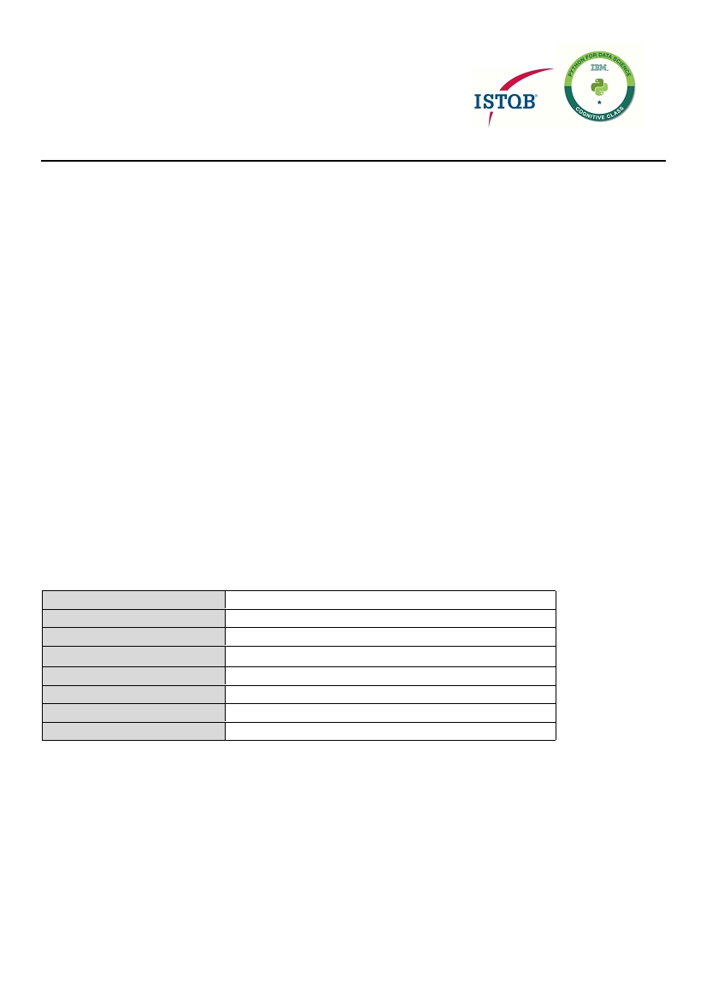

VIJAY SUBRAMANIAN R
Mobile : 9962149303 / E-Mail : subramanianvijay93@gmail.com
Offering over 6 years’ experience in Software Testing, Quality Assurance and Automation testing with leading
organizations of repute
__________________________ P ROFILE S UMMARY ____________________________
Software Testing and Quality Assurance professional with excellence in:
~ Software Testing
~ Python
~ Continuous Integration
~ Quality Assurance
~ Automation Testing
~ Oracle
~ Database Testing - MySQL
~ Defect Management
~ Capital Markets
Enriched with work experience in Software Testing and Quality Assurance in Banking and Financial Services domain –
Capital Markets.
Possess in depth knowledge of Testing Methodologies and Agile Software Development Life Cycle (SDLC), involved in
various phases like Requirements Analysis, Test Design, Test Execution, Defect Management and Preparation of test
status reports in distributed onsite/offshore model
Hands-on experience in Database Testing, SQL Server 6.5, 7.0, 2000, Oracle and ALM, QC, XML Comparator, Beyond
Compare, Altova XML Spy, Putty, WinSCP.
Experienced in automation testing using Python and authoring test documents, managing the quality assurance
program in the organization.
Working experience with advanced concepts in Python like Quandl, Data pickling, Multi threading, Pandas, Matplot
etc.,
Experienced in Web Scraping in Python using BeautifulSoup.
Experienced in working on version control tools like SVN.
Experience in Continuous Integration tool "Jenkins” and well versed with Software Testing Life Cycle (STLC), Logging
and Tracking Defects in all the phases with major responsibilities.
An effective team player with excellent communication, negotiation and relationship building skills.
_________________________ T ECHNICAL D ETAILS _____________________________
Operating Systems
Windows 9X, 2000, XP, 7, UNIX Commands
Scripting language
Python 2.7 - 3.3
RDBMS
MYSQL, Oracle, DataMart
Continuous Integration Tool
Jenkins
Support Tools
Microsoft Office, Toad for MySQL, PL SQL Developer, Sybase
Test Management Tools
HP-ALM 12.2, JIRA
Domain Skills
Banking & Financial Services - Capital Markets
XML Validation tools
Altova XML Spy, Beyond Compare, XML Comparator
_________________________P ROFESSIONAL C ertificates __________________________
_________________________O RGANISATIONAL E XPERIENCE ________________________
Sep’14 – Aug’18 with Cognizant, Chennai as Test Analyst
Accomplishments:
Certification Details:
BFS L0 certified tester - Foundation Level
Milestones Achieved in Cognizant
Have been awarded with Pillar of the Month 2016 and 2017 award for the Associate’s consistent high
performance and contribution
Relevant Project Experience
Project: Operational Transaction Information Service (OTIS)
Role : QA Analyst
Dec’14– Aug’18
Client : Royal Bank of Canada
Work location : Chennai, India
Environment : Java, DataStage, MySQL, Sybase
Project Description
OTIS project is aimed at building a data warehouse to store capital market trades for legal, audit and reporting
requirements for a known client in - Capital Markets. Different Front office applications publish trade and positions data in
an XML format called as RBCML 4.0 into the Enterprise Service Bus (ESB). An ESB adapter built in TIBCO will receive
trade messages from the ESB, parse and upload it into Trade Data Warehouse database through stored procedures
developed in MySQL. Necessary data validations, transformations, standardization will be performed before loading the
data into the database, then the IBM-Data Stage (Data Warehousing tool) will do Reconciliation and necessary validations
before sending it to Down Streams where the calculation of Risk involved in each transaction, conformance to compliance
of Trades execution, profit and loss statement for finance and operations are calculated in the down streams.
Roles and Responsibilities
Involved in design and implementation of automation framework developed in Python for regression test suites.
Developed, Maintained and Enhanced automated scripts for various applications using Python.
Involved in Continuous Integration using Jenkins.
Used automated scripts and performed functionality testing during the various phases of the application
development.
Developed automation tool in Python for outbound XML data validation that picks the xml’s realtime, checks for
mandatory X-paths, compares the xml data end to end with data available in Database based on user given
configuration and customized conditions.
Written SQL queries to verify data in Database is consistent with the data mapping requirements and business
transformation rules.
Contributed independently to deliver applications and products like Swaps, Forwards, Equity Investment in Funds
etc.,
Involved in Risk estimation and assessment for uninterrupted delivery.
Using Quality Center for test documentation, management and defect tracking
Handled Defect calls, status calls and reported the daily status of test cases and defects to onsite lead
Involved in test plan preparation, effort estimation, test summary report and project status reports.
Performed ETL data validation and movement of data from source to target (Flat file to DB, XML to DB, DB to Flat
file, DB to XML and Flat file to Flat file validation) as per data mapping requirements, also validation of extraction
logics and business transformation rules.
Prepared and published user guide for automation tools developed by OTIS QA team.
Mentored new resources in the team.
Responsible for identifying and evaluating new resources for the team
_________________________________________________________________
Aug’18 – Dec’19 with HCL Technologies [Client Location - BNP Paribas ISPL, Chennai] as Senior Test
Engineer
Relevant Project Experience
Project: IGATES
Role : Senior Test Engineer
Aug’18– Till Date
Client : BNP Paribas India Solutions Private Ltd.,
Work location : BNP Paribas ISPL, (Client Location) Chennai, India
Environment : Oracle, MySQL, Sybase
Project Description
IGATES project is built around a common data warehouse to all BP2S accounting platform. Trade details for Capital Market
trades executed at different front offices are passed on to BNP’s Asset and Fund Services via an Investment planning and
asset servicing application called HIPORT. Position, Pricing, Transaction, Portfolio and Accounting details are captured at
HIPORT and the processed data is passed to IGATES. In IGATES, this data is further processed and loaded into Data
warehouse through stored procedures developed in Oracle. Necessary data validations, transformations, standardization
are performed before loading the data into the database. This data is further passed on to Netik, an enterprise data
management application where additional transformations are performed before extracting the data and sending it to
Down Streams where the calculation of Risk, profit and loss statement are calculated and reported to clients.
Roles and Responsibilities
Used automated scripts and performed functionality testing during the various phases of the application
development.
Developed automation tool in Python for end to end comparison/ regression of Pre and Post development
outbound files that compares all the data in files based on conditions available in an external configuration and
generates comparison results for the complete data in all files.
Developed automation tool in Python for validation of data in outbound files based on data available in database
using cx_oracle client.
Automated the monitoring of environment health check and sending status to project stakeholders, using Python
to reduce human effort in continuously monitoring the environment health status of all applications deployed and
database used.
Getting sign off from client to extract the data from HIPORT to IGATES followed by end to end loading of data from
source system to target system
Written SQL queries to verify data in Database is consistent with the data mapping requirements and business
transformation rules.
Hands-on experience in data transformation using IBM-WTX
Interacting with BA to gather requirement and supporting development until code goes to live.
Responsible for defect tracking and tracking the tickets in JIRA and 2S-Track,
Handled Defect calls, status calls and reported the daily status of test cases and defects to onsite lead
Involved in test plan preparation, QC - Test Case report, Defect report and Execution report.
Since Jan’20 with BNP Paribas ISPL as Senior Associate – Senior Test Engineer
Relevant Project Experience
Project: IGATES
Role : Senior Test Engineer
Jan’20– Till Date
Client : BNP Paribas India Solutions Private Ltd.,
Work location : BNP Paribas ISPL, (Client Location) Chennai, India
Environment : Oracle, MySQL, Sybase
Project Description
IGATES project is built around a common data warehouse to all BP2S accounting platform. Trade details for Capital Market
trades executed at different front offices are passed on to BNP’s Asset and Fund Services via an Investment planning and
asset servicing application called HIPORT. Position, Pricing, Transaction, Portfolio and Accounting details are captured at
HIPORT and the processed data is passed to IGATES. In IGATES, this data is further processed and loaded into Data
warehouse through stored procedures developed in Oracle. Necessary data validations, transformations, standardization
are performed before loading the data into the database. This data is further passed on to Netik, an enterprise data
management application where additional transformations are performed before extracting the data and sending it to
Down Streams where the calculation of Risk, profit and loss statement are calculated and reported to clients.
Roles and Responsibilities
Test Lead, Managing testing activities and deliveries in UAT
Perform regression testing for all releases in iGates and giving testing sign-off in Pre-Production environment
Taken care of testing activity in Netik replacement project in which Netik handler was completely replaced by
BNPP’s internal solution.
Used automated scripts and performed functionality testing during the various phases of the BNPP’s application
development.
Responsible for database testing by testing the data loaded/ transformed in Database with expected data.
Developed automation tool in Python for end to end comparison/ regression of Pre and Post development
outbound files that compares all the data in files based on conditions available in an external configuration and
generates comparison results for the complete data in all files.
Developed automation tool in Python for validation of data in outbound files based on data available in database
using cx_oracle client.
Automated the monitoring of environment health check and sending status to project stakeholders, using Python
to reduce human effort in continuously monitoring the environment health status of all applications deployed and
database used.
Getting sign off from client to extract the data from HIPORT to IGATES followed by end to end loading of data from
source system to target system
Written SQL queries to verify data in Database is consistent with the data mapping requirements and business
transformation rules.
Handled Defect calls, status calls and reported the daily status of test cases and defects to onsite lead
Involved in test plan preparation, QC - Test Case report, Defect report and Execution report.
_____________________________E DUCATION _____________________________
B.Tech (Biotechnology) from Sri Venkateswara College of Engineering, Sriperumdudur, Tamil Nadu
___________________________ P ERSONAL D ETAILS ___________________________
Date of Birth:
30 th July 1993
Address:
Subramanya Nagar Main road, Kathirvedu, Vinayagapuram, Chennai – 600099
Contact:
91 - 9962149303/ 8870852206